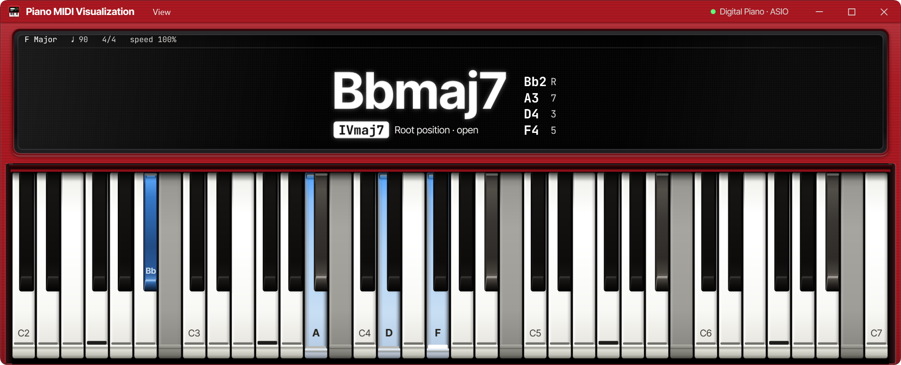
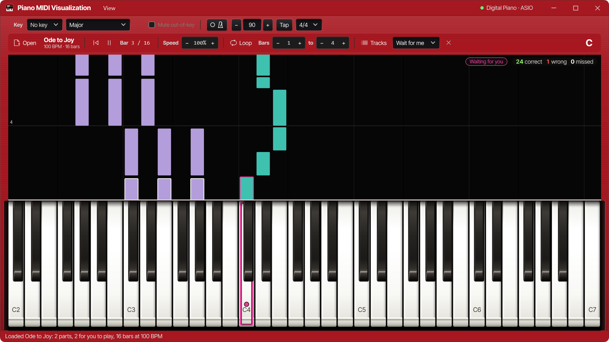
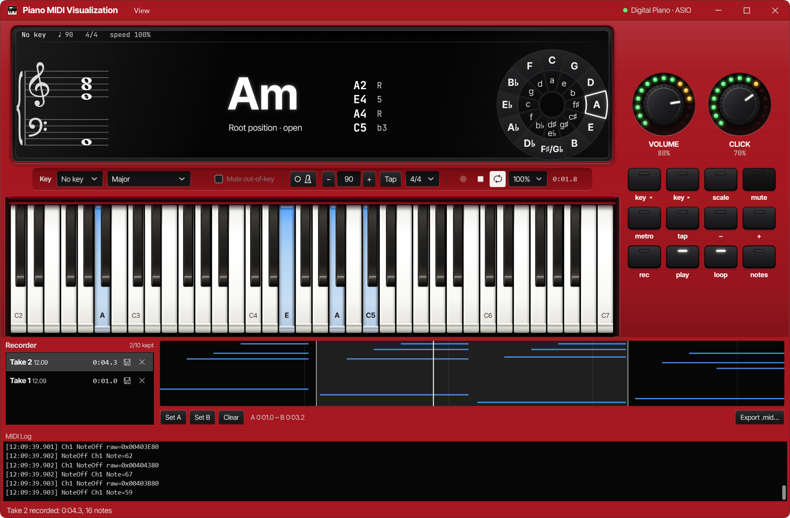
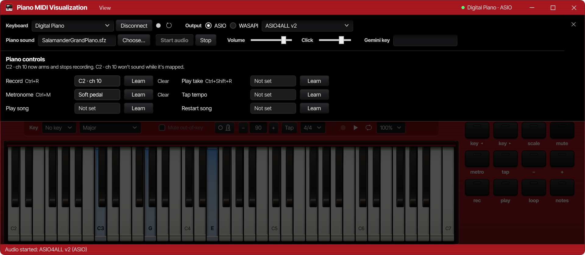
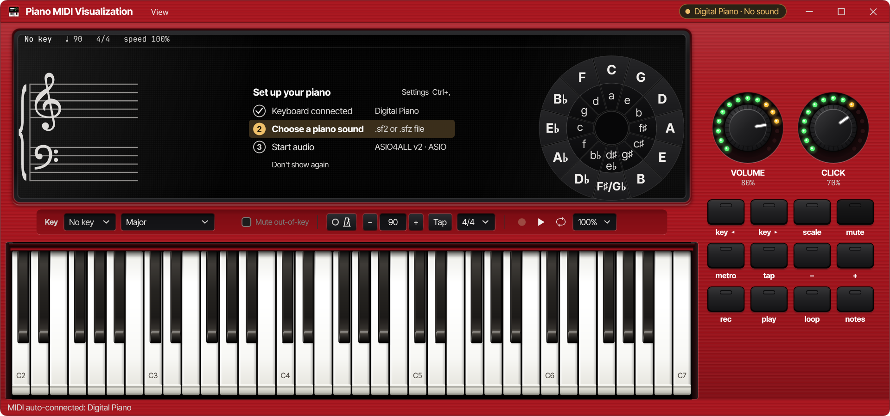

Full-Width OLED & Side Control Deck
The OLED bezel aligns edge-to-edge with the 61-key keyboard while the right-hand panel houses the rotary Volume and Click halo knobs and 12 rubber panel keys.
Falling-notes players show which keys to press. Piano MIDI Visualization tells you what they mean. Connect any USB or MIDI piano, play through any SoundFont (.sf2) or SFZ grand piano with ~5 ms ASIO audio, and read the chord name, figured-bass Roman numeral, voicing, grand staff, and circle of fifths from arm's length—without taking a hand off the keys.
The recessed gunmetal OLED bezel matches the exact full width of the 61-key keyboard below it—uniting the engraved grand staff, 72px chord readout, figured-bass numeral pill, circle of fifths, and diatonic chord strip.
When a key signature is active, keys outside the scale are visually dimmed across both white and black key surfaces, while in-key notes carry crisp front-lip markers and the tonic stands out immediately.
The right-hand scarlet hardware deck houses the 13-LED rotary halo knobs for Master Volume and Metronome Click above twelve rubber LED keys for key, scale, mute, metronome, recorder, and note labels.
Switch between the six operating states below. Every screenshot is rendered directly from the WPF visual tree at 1.5x HiDPI scale—never a mock-up.
Holding G7/B in C major. The recessed OLED display spans the full width of the 61-key keyboard and names the chord (G7/B), its figured-bass Roman numeral (V65), inversion (1st inversion), and voicing (drop 2) alongside each note and interval. Out-of-key keys are dimmed on the keyboard, while the right-hand hardware panel provides dedicated room for the Volume and Click halo knobs and twelve LED rubber keys.
The OLED bezel aligns edge-to-edge with the 61-key keyboard while the right-hand panel houses the rotary Volume and Click halo knobs and 12 rubber panel keys.

In F major, out-of-key B-natural white keys and C#/D#/F#/G# black keys are dimmed into shadow so in-key scale degrees and the F tonic jump out at a glance.

Practise any MIDI file with separate right/left hand lanes, bar looping, 25–150% tempo scaling, and Wait for Me mode that pauses until you play the chord.

Keep your last 10 takes in memory with full sustain-pedal fidelity, set A–B loop regions on the timeline, and export takes directly to standard .mid files.

Map unused lowest/highest keys, drum pads, or pedals on your MIDI controller to run the recorder, metronome, tap tempo, and song transport from the piano.

Auto-reconnects your last MIDI keyboard and audio driver on launch, and guides first-time setup with a three-step checklist right inside the OLED window.
Audition chords in C minor below to see how the OLED readout formats figured-bass Roman numerals, inversions, and voicings while out-of-key keys dim into the keybed.
| Instrument Subsystem | Musical Signal & Behaviour |
|---|---|
| Full-Width OLED Stage | Matches the exact width of the 61-key keyboard. Houses the key/tempo/meter status line, engraved grand staff, 72px chord name, figured-bass numeral pill, and interactive circle of fifths. |
| 12 Scales & Key Dimming | Major, natural/harmonic/melodic minor, 5 church modes, major/minor pentatonic, and blues. Out-of-key white and black keys dim into shadow while in-key notes and the tonic stay bright with front-lip bars. |
| Diatonic Chord Strip | Seven soft-key tiles at the bottom of the OLED display showing the key's triads or seventh chords (7ths toggle). Lights the chord you play and auditions voicings on click. |
| Right-Hand Hardware Deck | Dedicated side panel with 13-LED rotary Halo Knobs for Master Volume and Metronome Click above 12 LED rubber keys (key ◀, key ▶, scale, mute, metro, tap, -, +, rec, play, loop, notes). |
| MeltySynth .SF2 & .SFZ | Plays SoundFonts and multi-velocity SFZ pianos (like Salamander Grand Piano) through ASIO (~5 ms) or WASAPI with full CC64 sustain-pedal support. |
| AI Music Assistant | Optional panel (Shift+F2) powered by Google Gemini (`gemini-2.5-flash`) using your own API key, automatically receiving your active key, held chord, and recent MIDI activity. |
Every release ships as a self-contained single-file Windows win-x64 executable packaged with its license notices. No installer and no separate .NET runtime required.
Includes the full-width recessed OLED display aligned with the 61-key virtual keyboard, dimmed out-of-key scale visualization across white and black keys, right-hand hardware control deck with rotary Volume and Click halo knobs, SoundFont (.sf2) and SFZ audio engine over ASIO/WASAPI, falling-notes Song Practice, and 10-take MIDI Recorder.
Settings, window geometry, active key, and learned piano controls persist automatically in %LOCALAPPDATA%\PianoMidiVisualizationApp\settings.json.
Download the latest PianoMidiVisualizationApp-win-x64.zip release above, extract the folder anywhere (such as your Desktop), and run PianoMidiVisualizationApp.exe.
Download a free piano sound bank—such as Salamander Grand Piano (.sfz)—and click step 2 · Choose a piano sound in the OLED checklist.
Your USB MIDI keyboard and audio output auto-connect on launch. Choose a key centre on the toolbar or circle of fifths to dim out-of-key keys and start playing.
Every panel and transport action is reachable from the computer keyboard or via learned MIDI controls on your piano.
| Shortcut | Action | Surface / Behaviour |
|---|---|---|
| Ctrl+, | Settings… | Opens or closes the MIDI, SoundFont, ASIO/WASAPI, and Piano Controls overlay. |
| Ctrl+O | Open Song… | Loads a .mid file and switches the stage to falling-notes Song Practice. |
| Ctrl+M | Metronome On / Off | Starts or stops the sample-accurate audio metronome (30–240 BPM). |
| Ctrl+R | Record / Stop | Arms recording (starts on your first note) or finishes and saves the current take. |
| Ctrl+Shift+R | Play / Stop Take | Plays or stops the selected take in the 10-take MIDI recorder. |
| Shift+F2 | AI Music Assistant | Shows or hides the Google Gemini music theory chat panel. |
| Shift+F3 | MIDI Log | Shows or hides the timestamped raw MIDI monitor drawer. |
| Shift+F5 | Recorder | Shows or hides the 10-take piano-roll recorder drawer. |
| Shift+F6 | Circle of Fifths | Shows or hides the interactive circle of fifths inside the OLED display. |
| Shift+F7 | Chord Strip | Shows or hides the diatonic chord strip and soft keys along the bottom of the OLED. |
| Shift+F8 | Grand Staff | Shows or hides the key-signature grand staff on the left of the OLED display. |
| Shift+F9 | Song Practice | Toggles between the live harmony OLED readout and the falling-notes song lane. |
| F11 | Zen Mode | Hides all toolbars, side panels, and drawers—leaving only the OLED chord readout and 61-key keyboard. |
| Esc | Cancel / Close | Cancels MIDI Learn listening or closes the Settings overlay. |